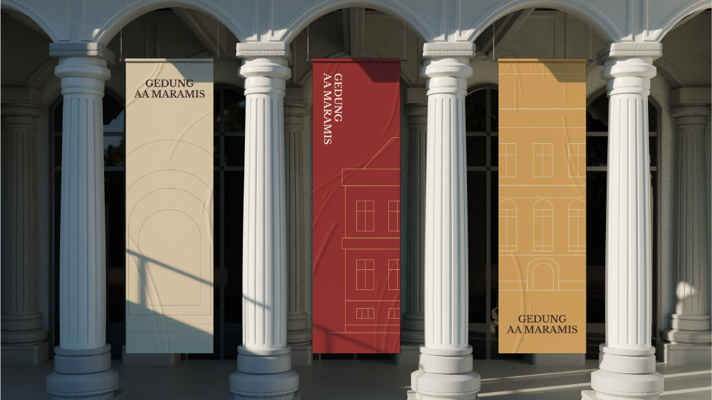

Warisan
yang Bekerja
Rumah pertama keuangan negara di jantung Weltevreden.
Gedung ini sudah punya panggung, tamu negara, dan penghargaan dunia. Yang belum ada adalah satu merek dan satu suara yang mengikat semuanya.

Memanfaatkan momentum dengan Strategi Komunikasi.
- 2025FIABCI World Prix d'Excellence, Silver kategori Heritage
- 2025Kunjungan HM Queen Máxima dari Belanda
- 2026Menyatu dengan Taman Lapangan Banteng
- 2026Upacara HUT RI dan Hari Oeang
- FilmRose Pandanwangi, ko-produksi empat negara
varian nama di materi resmi
Dari "A.A Maramis Heritage" sampai "Istana Daendels". Publik tidak tahu harus menyebutnya apa.
pengikut @gedung_maramis
Kanal resmi ada, tetapi liputan media dan kreator jauh lebih besar dan jarang menautkannya.
versi info akses yang bertentangan
"Tidak dibuka untuk umum" versus "gratis, Senin–Jumat". Belum ada sumber resmi yang meluruskan.
Rumah pertama keuangan negara di jantung Weltevreden.
Esensi merek: Warisan yang Bekerja
Lembaga negara, korporasi, pelaku kreatif, dan publik yang mencari ruang dengan makna.
Satu-satunya istana berlanggam imperial abad ke-19 di Indonesia yang masih bekerja.
Ruang negara, ruang karya, dan ruang publik dalam satu gedung.
Setiap kegiatan di dalamnya ikut melestarikan dan mengoptimalkan aset negara ini.
Mengapa Maramis?
Bukan tempat publik
Maramis adalah ruang bermakna kenegaraan. Kunjungan dan acaranya memiliki nilai.
Bangunan bersejarah dengan estetika
Tamu akan mengingat tempatnya, bukan hanya acaranya.
Masih bekerja, bukan dipajang
Gedung ini tetap dipakai negara, dan pemakaian itulah yang merawatnya.
Empat sifat, masing-masing dengan batasnya
Megah dan bersahaja. Kata "luxury" dari kajian HBU hanya untuk materi B2B, diganti "premium".
Angka dan tanggal bersumber. Sesuai nilai LMAN: Kredibel, Optimal, Kontributif.
Jujur soal batasan akses, dan selalu menunjukkan jalan masuk yang sah.
Sejarah disampaikan lewat ruang, benda, dan cerita.
Satu nama, dua lini
Merek gedung berdiri kuat dan diendors institusi. Lini produk dibuat lebih sederhana untuk calon mitra.
Apakah calon mitra membutuhkan ruangan untuk disewa atau pengalaman menjelajah gedung?
Maramis Ruang
Memakai ruang bersejarah- Venue, MICE, rapat, gala
- Acara dan festival mitra
- Izin foto dan film komersial
- Pemakaian kenegaraan
Maramis Jelajah
Mengalami warisan- Tur akhir pekan terdaftar
- Hari Terbuka dan pameran
- Program sekolah dan kampus
- Jelajah digital di Instagram dan TikTok
Lini selalu tampil di bawah nama gedung, misalnya "Maramis Jelajah – Gedung A.A. Maramis". "Istana Daendels" hanya dipakai sebagai konteks sejarah, tidak sebagai nama jual.
Tiga cerita yang harus selalu diulang
Pelestarian
Pendapatan dari optimalisasi kembali untuk pemeliharaan. Setiap acara tunduk pada kaidah cagar budaya.
Seri "Catatan Pemugaran", laporan pelestarian tahunan
Dampak
Panggung bagi ekonomi kreatif, UMKM, film, dan musik Indonesia, serta mitra kota di Lapangan Banteng.
Seri "Karya di Maramis", angka dampak tahunan
Pengalaman
Setiap ruang punya cerita. Acara di sini bukan sekadar sewa tempat.
Katalog ruang bernarasi, tur virtual 360°, "Maramis Moments"
Benang merah lintas pilar: sejarah gedung dihubungkan dengan APBN, pajak, dan kekayaan negara. Cerita ini tidak dimiliki venue lain.
Strategi komunikasi kepada stakeholders
Pemilihan diksi komunikasi
Gratis, Senin–Jumat 09.00–15.00Keliru. Gedung ada di kompleks perkantoran terbatas Kemenkeu, Kemenko Perekonomian, dan OJK.
Tidak dibuka untuk umumBenar, tetapi tidak lengkap. Tidak menjelaskan cara masuk yang sah.
Kunjungan melalui pendaftaran.
Satu kalimat ini dipakai di bio, Google Maps, situs, dan skrip petugas gerbang. Setiap kali disebut, sertakan jalan masuknya.
Analisis kanal penyebaran informasi
Media sosial resmi hanya Instagram dan TikTok. Karena akses fisik terbatas, keduanya adalah pintu utama publik mengenal gedung.
Instagram dan TikTok, didukung situs resmi, Google Business Profile, dan WhatsApp Business sebagai satu pintu pemesanan dan pendaftaran.
Owned
Fondasi- Bio dan highlight per lini
- Situs dengan katalog 49 ruang
- Koreksi info di Google Maps
Earned
Pengungkit utama- Media kit per momen nasional
- Klausul kredit dan tag di kontrak sewa
- Koreksi faktual ke portal
Shared
Pengganda- 6–10 kreator terkurasi per tahun
- Titik foto resmi, #WarisanyangBekerja
- Advokasi pegawai Kemenkeu
Paid
Selektif- Search: "venue heritage Jakarta"
- Promosi tur, usia 18–35
- Maks. empat advertorial per tahun

Lengkung dan lima warna tanah
#9c3738
#d8aa68
#e2d6be
#473538
#8a400f
Logotype yang direkomendasikan: GEDUNG A.A. MARAMIS. Menghapus "A.A." memutus penghormatan kepada Mr. A.A. Maramis.
Tiga fase menuju HUT Jakarta ke-500
Penyelarasan
Okt 2026 – Jan 2027- Bereskan nama, bio, dan highlight Instagram
- Buka TikTok @gedung_maramis
- SOP kunjungan berizin bersama pengamanan kompleks
- Empat tur percontohan
Peluncuran ulang
Feb – Jul 2027- Soft relaunch "Warisan yang Bekerja"
- Umumkan dua lini dan nama ruang baru
- Kampanye utama di Jakarta 500
Berkelanjutan
Agu 2027 dan seterusnya- Siklus konten dan advokasi rutin
- Narasi "Tiba dengan MRT"
- Evaluasi tahunan, target 2028
- Soft relaunchSitus penuh, film profil, dua lini
- Jakarta 500Pameran "Weltevreden 1809–2027"
- Laporan pertama"Warisan yang Bekerja" untuk publik
- Hari Oeang ke-81Pekan literasi fiskal
- MRT Fase 2ABundaran HI–Monas, "Tiba dengan MRT"